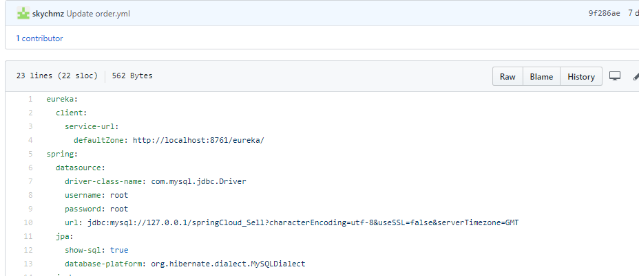
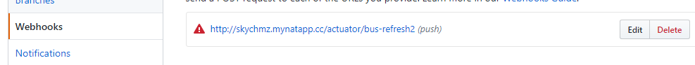

为了更好的管理应用的配置，也为了不用每次更改配置都重启应用，我们可以使用配置中心
关于eureka的服务注册和rabbitMQ的安装使用（自动更新配置需要用到rabbitMQ）这里不赘述，只关注配置中心的内容
我们需要引入关键的包是这三个
<dependency>
<groupId>org.springframework.cloud</groupId>
<artifactId>spring-cloud-config-server</artifactId>
</dependency>
<dependency>
<groupId>org.springframework.cloud</groupId>
<artifactId>spring-cloud-starter-bus-amqp</artifactId>
</dependency>
<dependency>
<groupId>org.springframework.boot</groupId>
<artifactId>spring-boot-starter-actuator</artifactId>
</dependency>需要在启动类加上@EnableConfigServer注解，这里有个busRefresh2方法需要讲下，其实这里有个坑，如果在github的webhook直接访问/actuator/bus-refresh是有json转换错误的，
因为github触发webhook的时候会带一大串字符，就是这段字符引发json转换错误，所以我们在这里包装下/actuator/bus-refresh
@SpringBootApplication
@EnableDiscoveryClient
@EnableConfigServer
@RestController
public class ConfigApplication {
@PostMapping("/actuator/bus-refresh2")
@ResponseBody
public Object busRefresh2(HttpServletRequest request, @RequestBody(required = false) String s) {
System.out.println(s);
return new ModelAndView("/actuator/bus-refresh");
}
public static void main(String[] args) {
SpringApplication.run(ConfigApplication.class, args);
}
}然后在配置文件上加上这些内容，主要是配置github上的配置文件的路径，配置rabbitMQ和启用bus-refresh端点。
spring:
application:
name: config
cloud:
config:
server:
git:
uri: https://github.com/skychmz/config.git
username: skychmz
password: xxxxxxx
rabbitmq:
host: localhost
username: guest
password: guest
management:
endpoints:
web:
exposure:
include: bus-refresh如果某个服务需要使用配置中心，先引入以下包
<dependency>
<groupId>org.springframework.cloud</groupId>
<artifactId>spring-cloud-starter-bus-amqp</artifactId>
</dependency>
<dependency>
<groupId>org.springframework.cloud</groupId>
<artifactId>spring-cloud-config-client</artifactId>
</dependency>在yml配置文件上加上如下配置，主要是开启配置中心，我们的配置中心的服务名是CONFIG
spring:
cloud:
config:
discovery:
enabled: true
service-id: CONFIG把该服务的配置文件放到github，注意eureka的配置还是要放本地的，因为服务启动的时候要先访问eureka才会找到CONFIG服务

配置github的webhooks，这里我用的是内网穿透的地址

在需要刷新配置的地方加上@RefreshScope注解，这样就完成了。当我们更改github上的配置文件之后，GitHub就会触发webhook从而自动刷新配置。
最后提一下如果zuul网关服务也需要自动刷新配置的话可以在启动类加一个方法返回一个ZuulProperties()，当然还要加上@RefreshScope注解
@SpringBootApplication
@EnableZuulProxy
public class ApiGatewayApplication {
public static void main(String[] args) {
SpringApplication.run(ApiGatewayApplication.class, args);
}
@ConfigurationProperties("zuul")
@RefreshScope
public ZuulProperties zuulProperties() {
return new ZuulProperties();
}
}